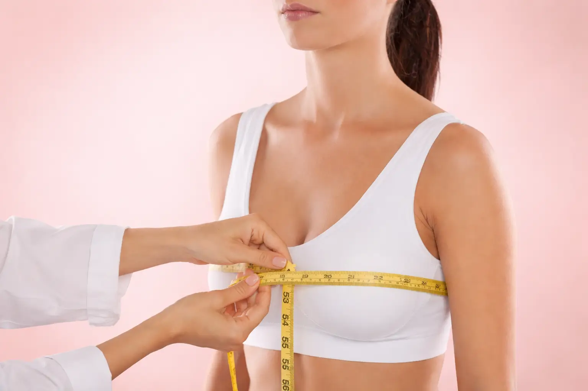
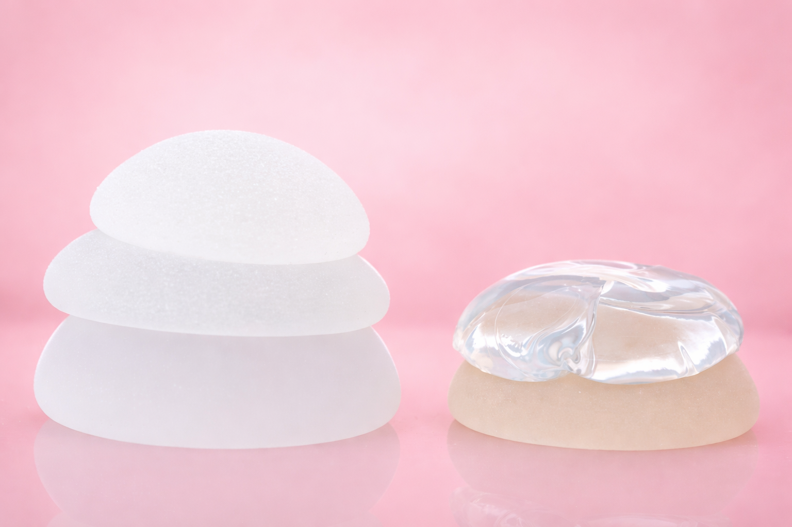
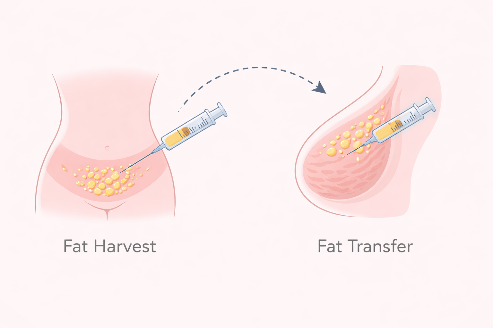

Surgical Philosophy
Breast Augmentation
“Every woman’s body is unique. Breast augmentation is not about perfection, but about achieving harmony that feels natural to you.”Whether you are looking to restore volume lost after pregnancy or weight changes, or simply seeking better symmetry, Dr. Agnes focuses on techniques that respect your natural anatomy for a balanced, personalized result.
WhatsApp ConsultationThe Procedure
What to Expect
A detailed discussion to understand your goals, body proportions, and expectations. Implant size, shape, and placement are carefully planned to suit your anatomy.
The procedure is performed under general anaesthesia. Implants are placed either above or below the muscle through carefully selected incision sites.
Most patients return to light activities within a few days. Swelling gradually subsides over weeks, with final results becoming more natural over time.

Understanding the Techniques

Breast Implants
Silicone implants provide a reliable and predictable way to enhance breast volume and projection. Different shapes and profiles are selected based on your body proportions and desired outcome.

Fat Grafting
Fat is gently harvested from areas such as the abdomen or thighs, processed, and carefully injected to enhance breast shape. This technique offers a softer, more natural enhancement.